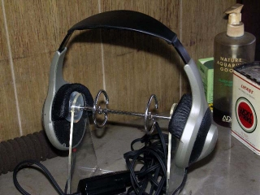

AT-HSP5

■価格 10,000円■型式 ヘッドスピーカー■振動板 77�oフルレンジ■インピーダンス 4Ω■再生周波数帯域 50-20,000Hz■許容入力 160ｍW(アンプ実効出力)■感度 ■コード 5ｍ■重量 270g（コード含まず）■発売 1997年3月21日■販売終了 1999年頃■備考 パワーアンプ・コントローラ付 電源 単三電池×2 写真は管理人所有機
テクニカのインデックスへ